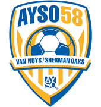

PlayMetrics Migration Resources
Live project dashboard showing verified configuration, completed steps, pending tasks, merchant account items, pre-launch sequence, and go-live checklist. All data verified from the test parent registration walkthrough on April 26, 2026.
Open Status Dashboard →SC website redirect steps, rotator banners, email templates, social media graphics, and go-live communication plan. All 10 AYSO assets embedded for preview and download.
Open Guide →Side-by-side translation of AYSO/SportsConnect and PlayMetrics terminology. 80+ concepts mapped across registration, payments, compliance, and program setup with help center links.
Open Guide →Two-system compliance model (Club vs Governing), staff designation paths, compliance tiers, legacy data migration plan, import workflow, and interim automation coverage. Updated with Superusers meeting intel.
Open Guide →12-step interactive checklist for importing historical player data from SportsConnect. Covers data cleanup, deduplication, export automation, BC verification handling, and CSV upload.
Open Guide →For Steven and Sara, with a printable one-page card for Division Coordinators. The full path from "registration is collecting names" to "players are on teams and know it" — In-House league, team shells, all 16 divisions with scoring rules, coach requests, team assignments scoped per coordinator, drag-and-drop rostering, and the deliberate notify step. Written for people coming from SportsConnect, with every step sourced from the Recreational League Operations and Coaching & Divisional Coordinator webinars. Supersedes the earlier Leagues & Divisions Setup runbook.
Open Guide →For Ben Hauser and anyone involved in game scheduling. Maps every SC scheduling concept to its PlayMetrics equivalent — fields, matchups, time slots, standings, score entry, practice planning, and auto-notifications. Includes the expected PM workflow and what we're waiting on (scheduling webinar).
Open Guide →